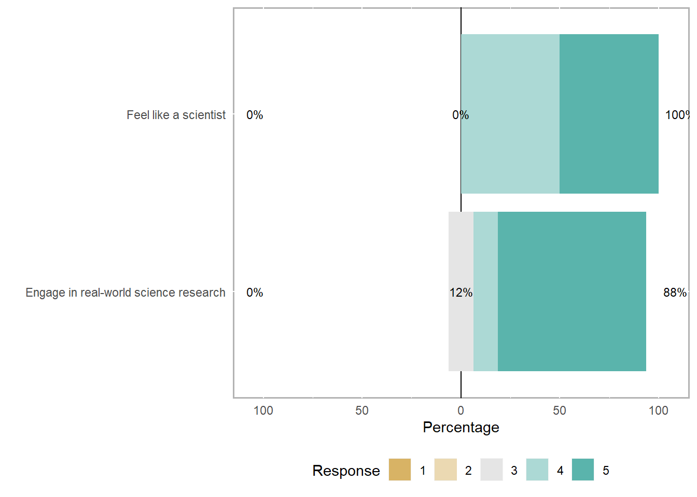
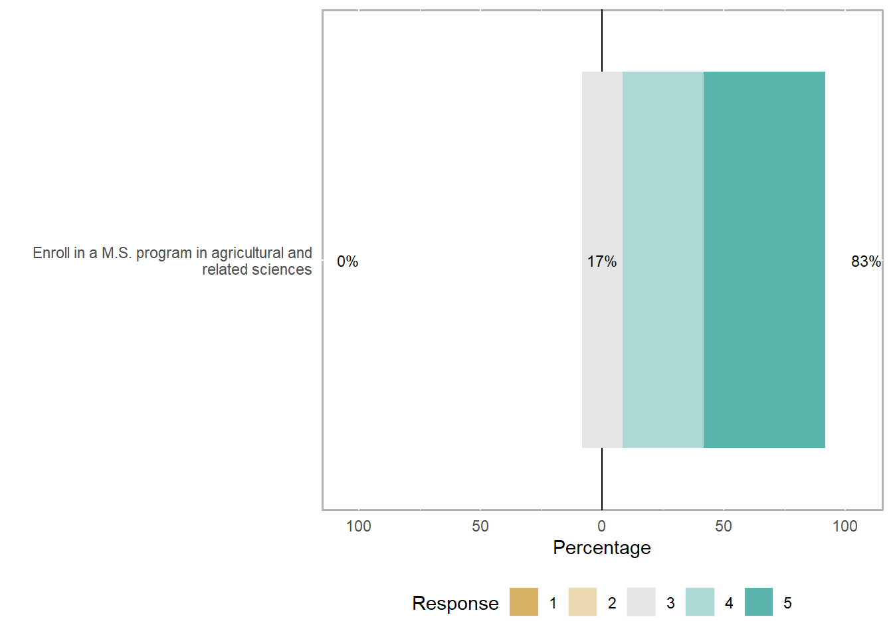

Introduction
This summer, we hosted eight undergraduate students from all over the country for our first year of Research and Extension Experiences for Undergraduates (REEU). This program is funded under the USDA-NIFA’s Education and Workforce Development initiative. The purpose of the program is to train undergraduate students in research and extension. We will be training 35 students over the course of 4 years (2019 to 2022).
Each student had an assigned mentor in either plant pathology, entomology, or agronomy departments. In addition to working with their mentors on their research or extension projects, the students also participated in professional development seminars, field trips, and FACT workshops. FACT stands for Food and Agriculture Cyberinformatics Tools. Our goal was to introduce students to a wide variety of topics related to modern plant health research; so that, they have enough data in hand to make a decision about what they would like to pursue for further studies.
Based on the results of student surveys, the program was able to meet its goals. The success of the program is reflected in the level of skills that students gained over the short 9-week period. See below for some of the areas where students improved their knowledge and skills. These are a few examples of questions that we asked students in an anonymous survey.
- How much did you gain in the following areas as a result of your research/extension experience in past nine weeks?
Scale: 1 = No gain, 2 = A little gain, 3 = Moderate gain, 4 = Good gain, 5 = Great gain
All students had a moderate to great gain in understanding of everyday researh work, confidence to contribute to science, and conducting scientific observations.
- During your research/extension experience, how much did you?

Scale: 1 = None, 2 = A little, 3 = Some, 4 = A fair amount, 5 = A great deal
Majority of students felt like a scientist and were engaged in real-world science research.
- Compared to your intentions before participating in this REEU, how likely are you now to?

Scale: 1 = Not more likely, 2 = A little more likely, 3 = Somewhat more likely, 4 = Much more likely, 5 = Extremely more likely
At the end of the REEU, 83% students were much more to extremely likely to enroll in a graduate program in agricultural and related sciences.
Activities
For a timeline of activities that we hosted over the summer, search #KSUplanthealthREEU hashtag on twitter or just click here. Here are our interns celebrating after the successful resereach symposium:
Happy interns after their super awesome poster presentations. Congratulations to all the mentees, and a special thanks to all mentors for supporting #KSUplanthealthREEU @USDA_NIFA @KennellyMegan @KSUPlantDr @1DEcook #NIFAImpacts #NationalInternDay pic.twitter.com/47FWc8Qn8w
— Lucky Mehra (@lmehra) July 25, 2019
Student work
During last week of the program, the students participated in a poster symposium. The collection of student work can be found here.
Video explanation of one of the project by the student intern, Sam Whitten:
We were also in K-State Research and Extension News Students take on important plant-based research
Application information for 2020
We will start accepting applications for summer 2020 in December 2019. Interested undergraduate students should watch our REEU website for application related updates.
Program personnel
Please feel free to contact any three of us if you have any question about the program and the application process.
Director: Megan Kennelly
Coordinator and co-director: Lucky Mehra
Co-director: David Cook